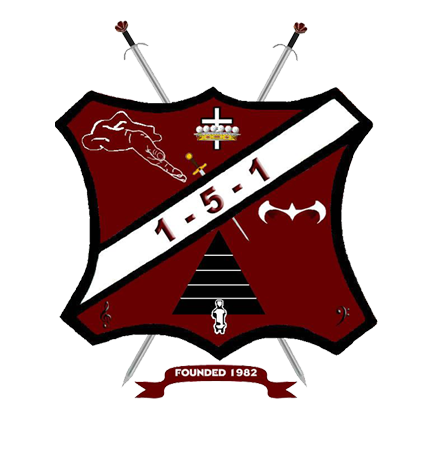

The Brothers of 1-5-1, Incorporated is a fraternity of men whose common bond is rooted in music. It was founded on March 6, 1982, at the Bismarck Hotel in Chicago, Illinois, by six members of the Hampton University Concert Choir who were on tour in the city, and four more young men pledged before the tour was over. Membership soon opened to band musicians as well as singers. The bat is our mascot, “Perseverance Even in the Face of Darkness” is our motto, and “Integrity and Achievement” is our creed.
Today our brothers live across the country: music professionals who produce and perform, alongside lawyers, educators, pastors, military officers, law enforcement officers, business owners and members of the media.
Read our full history ›